PR2AR_Primer.Rmd\(Pf\)PR is the most frequently measured and estimated malaria metric, making it familiar to both modelers and policy makers. Despite its ubiquity, \(Pf\)PR has substantial limitations as intelligence for policy development. Primarily, a given level of \(Pf\)PR can be associated with a variety of transmission intensities based on differing levels of immunity, case detection rates, vector control, ages of infection, among other factors. The attack-rate, \(A(t)\), measures the probability of acquiring an infection during a time period of length \(t\). By developing an algorithm to simulate the latent attack-rate associated with a given time-series of \(Pf\)PR, we enable investigation of risk of malaria infection. Measuring attack-rate – or force of infection (FoI) – directly requires cohort studies which are not universally available and can be expensive to conduct. Deriving estimates of attack-rate from \(Pf\)PR with uniform methods allows for comparison of risk of malaria infection across locations and over time.
We assume that infections arise from a Poisson process with a rate equal to the FoI, \(h\), so that the probability of acquiring a new infection after \(t\) days is \(A(t) = 1 - e^{-ht}\). Let \(Q(r, t) = e^{-r t}\) denote the fraction of a cohort with recovery rate, \(r\), that naturally remains infected after \(t\) days. It is tempting to start with the simple model: \[\begin{equation} X_{t+1} = A_t (1 - X_t) + Q X_t \end{equation}\] From this, we can solve for \(A_t\): \[\begin{equation} A_t = \frac{X_{t+1} - Q X_t}{1-X_t} \end{equation}\] At the steady state, \(X_{t+1} = X_t,\) so we get the relationship: \[\frac{A}{1-Q} = \frac{X}{1-X}\] Note that \(A\), a probability, can be at most 1, so \(X \leq 1/(2-Q)\). If we take a 14-day time step and assume \(r = \frac{1}{200}\), then we get that Equation 2 gives nonsensical results for \(X > 0.93\). Since there is no evidence that being infected protects against future infection, this is an artifact.
We don’t want to work around artifacts, so what if we rethink the model. What if anyone can get infected, including the fraction that would have otherwise cleared their infections? The susceptible class is \(1-X_t + (1-Q)X_t\), or more simply: \[\begin{equation} X_{t+1} = A_t (1 - Q X_t) + Q X_t \end{equation}\] When \(A=1\), at the steady state, we get that \(X=1\).
One more wrinkle might help us write down equations without making errors. We will write down equations that assign a state to every person.
\[\begin{equation} \begin{array}{rl}
S_{t+1} &= (1-A_t) S_t + (1 - A_t)(1-Q)X_t\\
X_{t+1} &= A_t S_t + A_t(1 - Q)X_t + Q X_t \\
\end{array} \end{equation}\]
Which we can rewrite in Markov matrix form, ensuring that all entries are positive and every column adds to 1. Let \(Y = \left<S,X\right>\), then we can rewrite these equations as \(Y_{t+1} = B Y_t\) where \[\begin{equation} B= \left[ \begin{array}{cc} 1-A_t & (1-A_t)(1-Q) \\ A_t & A_t(1 - Q) + Q \\ \end{array} \right] \end{equation}\] and we simply check to make sure all the columns sum to 1 to verify that \(B\) is row stochastic. We really wish to solve for \(A_t\), so we write \(Y_{t+1} = A_t W Y_t + V Y_t\), where
\[\begin{equation} W= \left[ \begin{array}{cc} -1 & -(1-Q)\\ 1 & 1 - Q \\ \end{array} \right] \end{equation}\] and \[\begin{equation} V = \left[ \begin{array}{cc} 1 & 1-Q \\ 0 & Q \\ \end{array} \right] \end{equation}\]
\(B\) is a Markov matrix, which guarantees that the largest eigenvalue must equal 1 and the associated first right eigenvector, \(x_R\), is the stable equilibrium for the state vector \(Y\), such that \(B x_R = x_R\). We use this to solve for the steady state attack-rate associated with a given \(Pf\)PR value.
Solving for the first right eigenvector \[ (B - I) \cdot Y = \left[ \begin{array}{cc} -A & (1-A)(1-Q) \\ A & -(1-A)(1-Q)\\ \end{array} \right] \cdot Y = A S - (1 - A)(1 - Q)X = 0 \] and including the fact that the sum of all states is 1 \[S = 1 - X\] we get that \[ X^* = \frac{A}{1-Q(1-A)} \] and \[ A^* = \frac{X - QX}{1-QX}\]
Alternatively, we can utilize a one dimensional optimization function to solve: \[A^* = argmin_{A \in [0,1]} f(A) = |X - D Y_{eq}(A)|\] where \[Y_{eq}(A) = (A W + V) x_R = x_R\]
## Solve for steady states using eigen function and algebraic solution
# Set up example B
dt = 10 # ten day time step
r = 1 / 200 # two hundred day duration of malaria infection
Q = exp(-r*dt)
A = 0.1
PAR = list(A = A, Q = Q)
makeB <- function(PAR) {
A = PAR$A
Q = PAR$Q
cbind(c(1 - A, A), c((1 - A)*(1 - Q), A*(1 - Q) + Q))
}
findYeq <- function(PAR, Bfn) {
B = Bfn(PAR)
e = eigen(B)
first = Re(e$vectors[ ,1])
Yeq = as.vector(first / sum(first))
return(Yeq)
}
Yeq1 = findYeq(PAR, makeB)
Yeq1
#> [1] 0.3050417 0.6949583
# Find steady state algebraically
algebYeq <- function(PAR) {
A = PAR$A
Q = PAR$Q
X = A / (1 - Q*(1 - A))
S = 1 - X
Yeq = c(S,X)
return(Yeq)
}
Yeq2 = algebYeq(PAR)
Yeq2
#> [1] 0.3050417 0.6949583
# Confirm steady state
B = makeB(PAR)
sum(B %*% Yeq1 - Yeq1)
#> [1] 0
sum(B %*% Yeq2 - Yeq2)
#> [1] 5.551115e-17
# Convert attack-rate to equilibrium PR
AR2PR <- function(A, PAR, Bfn, eigen = T) {
PR = c()
for(Ai in A) {
PAR$A = Ai
if(eigen) {
PRi = findYeq(PAR, Bfn)[2]
} else {
PRi = algebYeq(PAR)[2]
}
PR = c(PR, PRi)
}
return(PR)
}
# Plot
A = seq(0, 1, 0.05)
X = AR2PR(A, PAR, makeB)
plot(A, X, type = "l")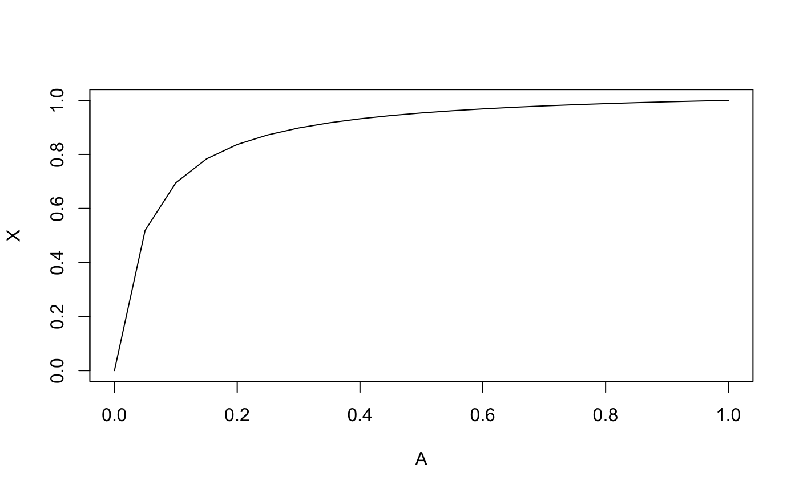
## Solve for attack-rate from X using optimize function and algebraic solution
# optimize function
X = c(0.5, 0.6)
fn <- function(A, PAR, Bfn, X) {
PR = AR2PR(A, PAR, Bfn)
return(abs(X - PR))
}
optimA <- function(X, PAR, Bfn) {
A <- c()
for(Xi in X) {
Ai <- optimize(fn, c(0, 1), PAR = PAR, X = Xi, Bfn = Bfn)$minimum
A <- c(A, Ai)
}
return(A)
}
optimA(X, PAR, makeB)
#> [1] 0.04648978 0.06817784
# Algebraic solution
algebA <- function(X, PAR) {
Q = PAR$Q
A = (X - Q*X)/(1 - Q*X)
return(A)
}
algebA(X, PAR)
#> [1] 0.04650262 0.06816891
## Make plots
X = seq(0, 1, 0.05)
A1 <- optimA(X, PAR, makeB)
A2 <- algebA(X, PAR)
plot(X, A1, ylab = "A")
lines(X, A2)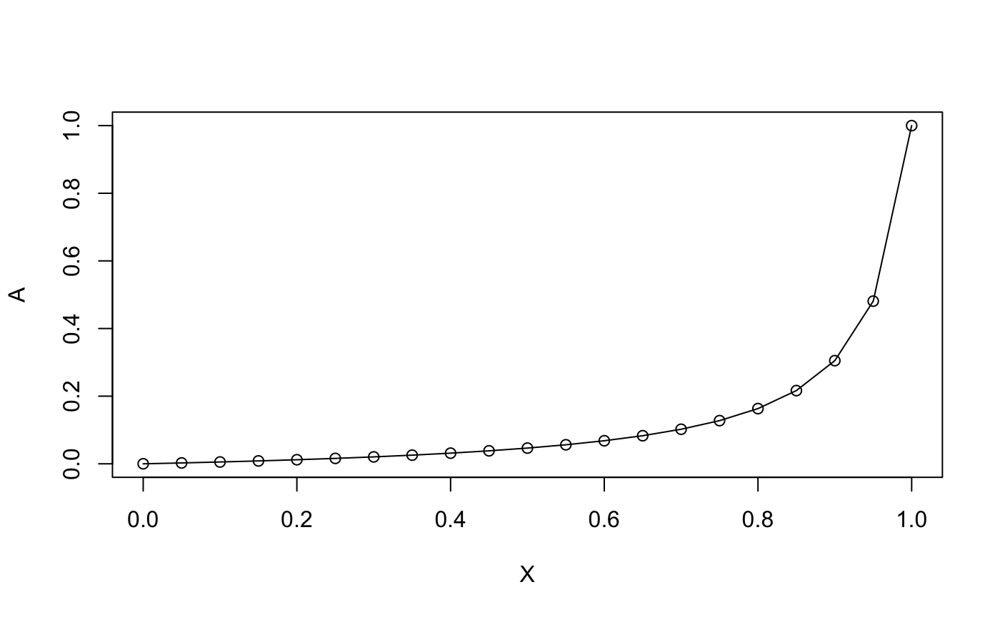
Of course, we don’t know \(Y_t\) but we do know \(X_t\), estimated \(Pf\)PR. We let \(D\) denote the row vector that maps \(Y\) onto \(X\): \(D = \left<0,1 \right>\) and \[X = D \cdot Y = \left[ \begin{array}{cc} 0 & 1 \end{array} \right] \cdot \left[ \begin{array}{c} S\\ X\\ \end{array} \right] \] To solve for the scalar \(A_t\), we simply solve the two-step equation \[D Y_{t+1} = D B Y_t = D \left( A_t W Y_t + V Y_t \right),\] so \[A_t = \left( X_{t + 1} - D V Y_t \right) / \left( D W Y_t \right).\]
## Compare steady state solutions to forward simulation
D = t(c(0, 1))
X = c(seq(0.3, 0.6, 0.01), seq(0.59, 0.3, -0.01))
# Find steady state values for X
steadyA = optimA(X, PAR, makeB)
# Generate W and V matrices
makeW <- function(PAR) {
Q = PAR$Q
cbind(c(-1, 1), c(-(1 - Q), (1 - Q)))
}
W = makeW(PAR)
makeV <- function(PAR) {
Q = PAR$Q
cbind(c(1, 0), c(1 - Q, Q))
}
V = makeV(PAR)
# Set up equilibrium start values
forwardA = PAR$A =c(steadyA[1])
Y = algebYeq(PAR)
# Simulate forward
for(i in 2:length(X)) {
forwardA[i] = PAR$A = as.numeric((X[i] - D%*%V%*%Y) / (D%*%W%*%Y))
B = makeB(PAR)
Y = B%*%Y
}
# Plot
plot(steadyA, type = "l", ylab = "A",
ylim = c(min(c(steadyA, forwardA)), max(c(steadyA, forwardA))))
lines(forwardA, lty = "dashed")
legend("topleft", legend = c("Steady", "Forward"), lty = 1:2)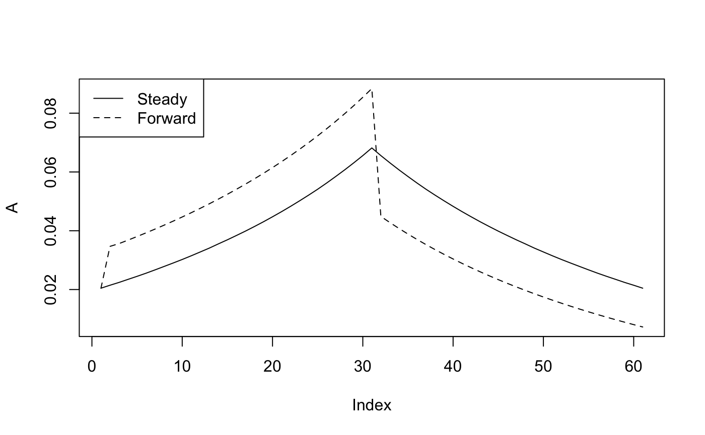
Let \(\rho\) denote the fraction of incident malaria infections that are treated and cured. Let \(\delta\) denote the rate anti-malarial drugs are used without a confirmed malaria case attributable to malaria. \(C\) is now a state variable denoting the proportion of the population on treatment.
\[\begin{equation} \begin{array}{rl} S_{t+1} &= (1-\delta)(1-A_t) S_t + (1-A \rho)(1-Q) X_t + (1-\delta) C_t \\ X_{t+1} &= (1-\rho) A_t S_t +(1-\delta)(1-A \rho) Q X_t \\ C_{t+1} &= (\delta + (1-\delta)\rho A_t ) S_t + (\rho A_t + \delta) X_t + \delta \end{array} \end{equation}\]
Now, \(Y = \left<S,X,C \right>\), \(D = \left<0,1,0 \right>\) and \[\begin{equation} B= \left[ \begin{array}{ccc} (1-\delta)(1-A_t) & (1-\delta)(1-A_t \rho)(1-Q) & 1 - \delta \\ (1-\delta)(1-\rho) A_t & (1-\delta)(1-A_t \rho) Q & 0 \\ \delta + (1-\delta)\rho A_t & \delta + (1-\delta)\rho A_t & \delta\\ \end{array} \right] \end{equation}\]
\[\begin{equation} W= (1-\delta)\left[ \begin{array}{ccc} -1& -\rho(1-Q) & 0 \\ 1-\rho & - \rho Q & 0 \\ \rho & \rho & 0 \\ \end{array} \right] \end{equation}\]
\[\begin{equation} V = (1-\delta) \left[ \begin{array}{ccc} 1 & 1-Q & 1 \\ 0 & Q & 0 \\ \delta / (1 - \delta) & \delta / (1 - \delta) & \delta / (1 - \delta)\\ \end{array} \right] \end{equation}\]
Solving for \(Y\) at equilibrium is now critical because there are two unknowns, namely \(S\) and \(C\), for a given value of \(X\).
## Solve for steady states using eigen function and algebraic solution
# Set up example B
PAR$d = 0.05 # rate of anti-malarial drug user w/0 confirmed malaria
PAR$rho = 0.1# fraction of incident malaria cases that are treated and cured
makeBdrugs <- function(PAR) {
A = PAR$A; Q = PAR$Q; d = PAR$d; rho = PAR$rho
cbind(c((1 - d)*(1 - A), (1 - d)*(1 - rho)*A, d + (1 - d)*rho*A),
c((1 - d)*(1 - A*rho)*(1 - Q), (1 - d)*(1 - A*rho)*Q, d + (1 - d)*rho*A),
c(1 - d, 0, d))
}
colSums(makeBdrugs(PAR))
#> [1] 1 1 1
Yeq = findYeq(PAR, makeBdrugs)
Yeq
#> [1] 0.89224423 0.05710104 0.05065473
# Confirm steady state
B = makeBdrugs(PAR)
sum(B %*% Yeq - Yeq)
#> [1] 5.551115e-17
## Make plots comparing to no treatment
simpleA = PR2AReq(X, PAR, makeB)
drugsA = PR2AReq(X, PAR, makeBdrugs)
plot(steadyA, type = "l", ylab = "A",
ylim = c(min(c(simpleA, drugsA)), max(c(simpleA, drugsA))))
lines(drugsA, lty = "dashed")
legend("topleft", legend = c("Simple Model (SM)", "SM with Drugs"), lty = 1:2)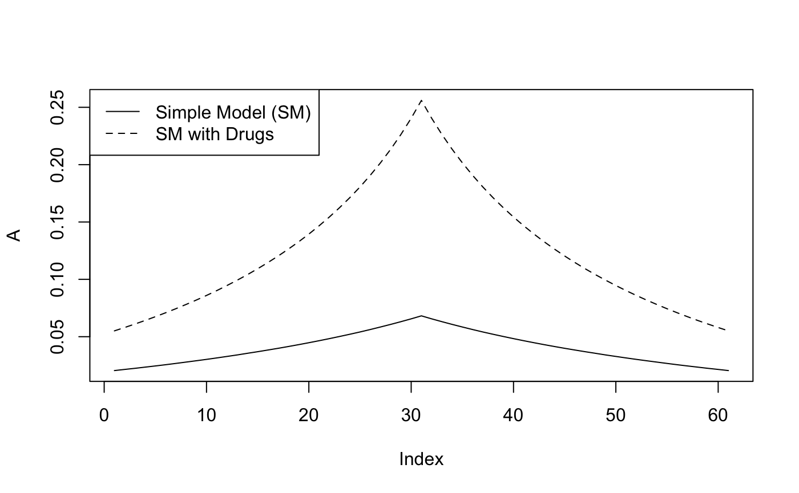
# Update AR2PR to accomodate treatment class
AR2PR <- function(A, PAR, Bfn, eigen = T) {
PR = c()
for(Ai in A) {
PAR$A = Ai
if(eigen) {
eq = findYeq(PAR, Bfn)
} else {
eq = algebYeq(PAR)
}
PR = c(PR, eq[2])
if(length(eq) == 3) {
if(Ai == A[1]) {
C = c(eq[3])
} else {
C = c(C, eq[3])
}
}
}
if(length(eq) == 3) {
out.list = list(X = PR, C = C)
} else {
out.list = list(X = PR)
}
return(out.list)
}
## Plot for a range of treatment rates
plotAR2PR <- function(PAR, Bfn, AR_range = c(0.01, 1), logX = T, logY = F,
plotC = T, plotXover1_C = F) {
# Prep data
AR = seq(AR_range[1], AR_range[2], length.out = 100)
rho = c(seq(0, 0.075, 0.025), seq(0.1, 0.8, .1))
dt <- data.table()
for(rho_i in rho) {
PAR$rho <- rho_i
PR <- AR2PR(AR, PAR, Bfn)
X_i = PR$X
C_i = PR$C
add.dt <- data.table(AR = AR, rho = rho_i, X = X_i, C = C_i)
dt <- rbind(dt, add.dt)
}
# Plot
gg <- ggplot(dt, aes(x = AR, y = X)) + geom_line() + facet_wrap(~rho) +
theme_classic() +
labs(title = "Attack-rate and PfPR for different case management rates",
subtitle = paste0("Anti-malarial drug use w/o confirmed malaria: ", PAR$d)) +
xlab("Attack-rate") + ylab("PfPR")
if(logX) {
gg = gg + scale_x_continuous(trans='log10')
}
if(logY) {
gg = gg + scale_y_continuous(trans='log10')
} else {
gg = gg + ylim(c(0, 1))
}
if(plotC) {
top.dt <- copy(dt)[, C := 0]
top.dt <- top.dt[nrow(top.dt) - 1:nrow(top.dt) + 1]
poly.dt <- rbind(dt, top.dt)
gg = gg + geom_polygon(data = poly.dt, aes(x= AR, y = (1-C), fill = "Treated"), alpha = 0.5) +
theme(legend.position="bottom", legend.title = element_blank())
}
if(plotXover1_C) {
gg = gg + geom_line(aes(x = AR, y = X / (1 - C)), color = "red")
}
gg
}
plotAR2PR(PAR, makeBdrugs)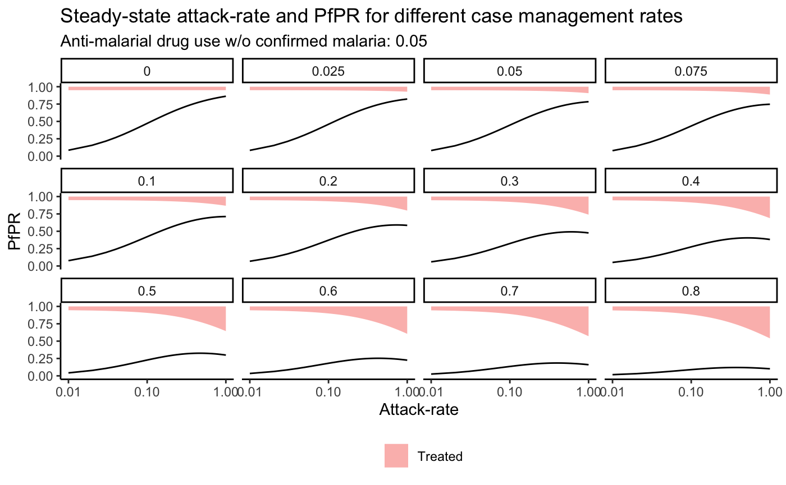
As can be seen in the preceding plots, for a given level of drug use there are levels of \(Pf\)PR that are not plausible. These thresholds can assist with identifying a disconnect between estimated case management and \(Pf\)PR. In addition, the relationship between AR and PR is not monotonic for certain levels of treatment, leading to two solutions for a given \(Pf\)PR that exceeds the PR associated with an AR of 1 but is less than the maximum allowable PR. In order to address both of these phenomenon we will introduce boundary conditions and report both possible AR values when convert from \(Pf\)PR to AR.
AR2PRopt <- function(A, PAR, Bfn) {
AR2PR(A, PAR, Bfn)$X
}
findAXmax <- function(PAR, Bfn) {
opt <- optimize(AR2PRopt, interval = c(0, 1), PAR, Bfn, maximum = T)
A = opt$maximum
X = opt$objective
return(list(A = A, X = X))
}
PAR$rho = 0.5
max = findAXmax(PAR, makeBdrugs)
max
#> $A
#> [1] 0.4677827
#>
#> $X
#> [1] 0.3259383
fn <- function(A, PAR, Bfn, X) {
PR = AR2PR(A, PAR, Bfn)$X
return(abs(X - PR))
}
PR2AReq <- function(X, PAR, Bfn) {
A1X <- AR2PR(1, PAR, Bfn)
max <- findAXmax(PAR, Bfn)
print(paste0("max A: ", round(max$A, 3), "; max X: ", round(max$X, 3)))
mono <- abs(A1X$X - max$X) < 0.001
if(mono) {
print("Monotonic")
} else {
print("Non-monotonic")
outA2 <- c()
outY2 <- matrix(nrow = nrow(Bfn(PAR)), ncol = length(X))
}
outA <- c()
outY <- matrix(nrow = nrow(Bfn(PAR)), ncol = length(X))
for(Xi in X) {
if(Xi > max$X) {
outA <- c(outA, NA)
outA2 <- c(outA2, NA)
next
}
A = optimize(fn, c(0, max$A), PAR = PAR, X = Xi, Bfn = Bfn)$minimum
outA = c(outA, A)
PAR$A = A
Y = findYeq(PAR, Bfn)
outY[, which(X == Xi)] = Y
if(!mono) {
if(Xi > A1X$X) {
A = optimize(fn, c(max$A, 1), PAR = PAR, X = Xi, Bfn = Bfn)$minimum
outA2 <- c(outA2, A)
PAR$A = A
Y = findYeq(PAR, Bfn)
outY2[, which(X == Xi)] <- Y
} else {
outA2 <- c(outA2, NA)
}
}
}
if(mono) {
outList = list(A = outA, Y = outY)
} else {
outList = list(A = outA, Y = outY, A2 = outA2, Y2 = outY2)
}
return(outList)
}
X = seq(0.05, 0.35, 0.01)
X = (1 + 0.1*sin(seq(0, length(X), length.out = length(X))))*X
plot(X, type = "l")
abline(h = max$X, col = "red")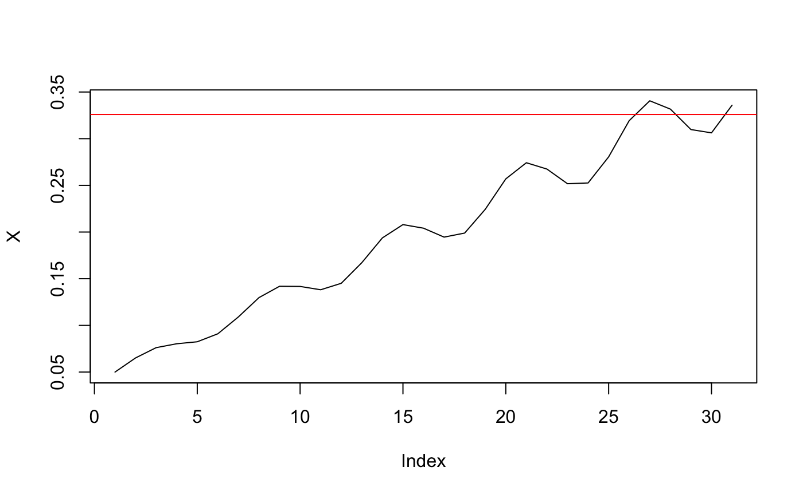
eqAR = PR2AReq(X, PAR, makeBdrugs)
#> [1] "max A: 0.468; max X: 0.326"
#> [1] "Non-monotonic"
eqAR
#> $A
#> [1] 0.01198213 0.01618449 0.01948225 0.02076928 0.02145081 0.02424543
#> [7] 0.03058186 0.03871652 0.04404433 0.04393387 0.04236533 0.04548629
#> [13] 0.05659793 0.07270503 0.08300557 0.08007853 0.07329988 0.07630647
#> [19] 0.09666807 0.13284356 0.15987869 0.14836690 0.12603847 0.12705906
#> [25] 0.17195397 0.32290314 NA NA 0.26098140 0.24517938
#> [31] NA
#>
#> $Y
#> [,1] [,2] [,3] [,4] [,5] [,6]
#> [1,] 0.89458213 0.87765431 0.86513887 0.86042490 0.85796580 0.84814120
#> [2,] 0.05004153 0.06509816 0.07615038 0.08029452 0.08245216 0.09104262
#> [3,] 0.05537634 0.05724753 0.05871075 0.05928058 0.05958204 0.06081618
#> [,7] [,8] [,9] [,10] [,11] [,12]
#> [1,] 0.82729529 0.80309214 0.78859152 0.78888227 0.79305507 0.78483261
#> [2,] 0.10910224 0.12975252 0.14194077 0.14169783 0.13820470 0.14507580
#> [3,] 0.06360247 0.06715534 0.06946772 0.06941989 0.06874024 0.07009159
#> [,13] [,14] [,15] [,16] [,17] [,18]
#> [1,] 0.75797138 0.72458183 0.70598491 0.71107851 0.72345485 0.71786177
#> [2,] 0.16715745 0.19370522 0.20797962 0.20411018 0.19458147 0.19890933
#> [3,] 0.07487118 0.08171294 0.08603547 0.08481131 0.08196368 0.08322889
#> [,19] [,20] [,21] [,22] [,23] [,24]
#> [1,] 0.68397785 0.6366700 0.6087158 0.6200009 0.6445785 0.6433669
#> [2,] 0.22431573 0.2569425 0.2742311 0.2674562 0.2517593 0.2525611
#> [3,] 0.09170642 0.1063876 0.1170531 0.1125429 0.1036622 0.1040720
#> [,25] [,26] [,27] [,28] [,29] [,30] [,31]
#> [1,] 0.5977265 0.5043288 NA NA 0.5354249 0.5446465 NA
#> [2,] 0.2805385 0.3193380 NA NA 0.3097963 0.3062571 NA
#> [3,] 0.1217350 0.1763332 NA NA 0.1547788 0.1490964 NA
#>
#> $A2
#> [1] NA NA NA NA NA NA NA
#> [8] NA NA NA NA NA NA NA
#> [15] NA NA NA NA NA NA NA
#> [22] NA NA NA NA 0.6775987 NA NA
#> [29] 0.8384780 0.8925494 NA
#>
#> $Y2
#> [,1] [,2] [,3] [,4] [,5] [,6] [,7] [,8] [,9] [,10] [,11] [,12] [,13]
#> [1,] NA NA NA NA NA NA NA NA NA NA NA NA NA
#> [2,] NA NA NA NA NA NA NA NA NA NA NA NA NA
#> [3,] NA NA NA NA NA NA NA NA NA NA NA NA NA
#> [,14] [,15] [,16] [,17] [,18] [,19] [,20] [,21] [,22] [,23] [,24]
#> [1,] NA NA NA NA NA NA NA NA NA NA NA
#> [2,] NA NA NA NA NA NA NA NA NA NA NA
#> [3,] NA NA NA NA NA NA NA NA NA NA NA
#> [,25] [,26] [,27] [,28] [,29] [,30] [,31]
#> [1,] NA 0.3993442 NA NA 0.3696145 0.3609016 NA
#> [2,] NA 0.3193404 NA NA 0.3097930 0.3062515 NA
#> [3,] NA 0.2813154 NA NA 0.3205924 0.3328469 NAIn the above PR2AR function we are returing the equilibrium AR associated with each \(Pf\)PR value. While this is a helpful approximation, as we would expect (and demonstrated earlier) the forward simulation estimates of AR differ from the equilibrium estimates.
makeBdrugs <- function(PAR) {
A = PAR$A; Q = PAR$Q; d = PAR$d; rho = PAR$rho
cbind(c((1 - d)*(1 - A), (1 - d)*(1 - rho)*A, d + (1 - d)*rho*A),
c((1 - d)*(1 - A*rho)*(1 - Q), (1 - d)*(1 - A*rho)*Q, d + (1 - d)*rho*A),
c(1 - d, 0, d))
}
# Generate W and V matrices
makeWdrugs <- function(PAR) {
A = PAR$A; Q = PAR$Q; d = PAR$d; rho = PAR$rho
cbind(c(-(1 - d), (1 - d)*(1 - rho), (1 - d)*rho),
c(-(1 - d)*rho*(1 - Q), -(1 - d)*rho*Q, (1 - d)*rho),
c(0, 0, 0))
}
W = makeWdrugs(PAR)
makeVdrugs <- function(PAR) {
PAR$A = 0
makeBdrugs(PAR)
}
V = makeVdrugs(PAR)
D= t(c(0, 1, 0))
# Set up equilibrium start values
forwardA = PAR$A =c(eqAR$A[1])
Y = findYeq(PAR, makeBdrugs)
# Simulate forward
for(i in 2:length(X)) {
forwardA[i] = PAR$A = as.numeric((X[i] - D%*%V%*%Y) / (D%*%W%*%Y))
B = makeBdrugs(PAR)
Y = B%*%Y
}
# Plot
plot(eqAR$A, type = "l", ylab = "A",
ylim = c(0, max(c(eqAR$A, forwardA), na.rm = T)))
abline(h = max$A, col = "red")
lines(forwardA, lty = "dashed")
legend("topleft", legend = c("Steady", "Forward"), lty = 1:2)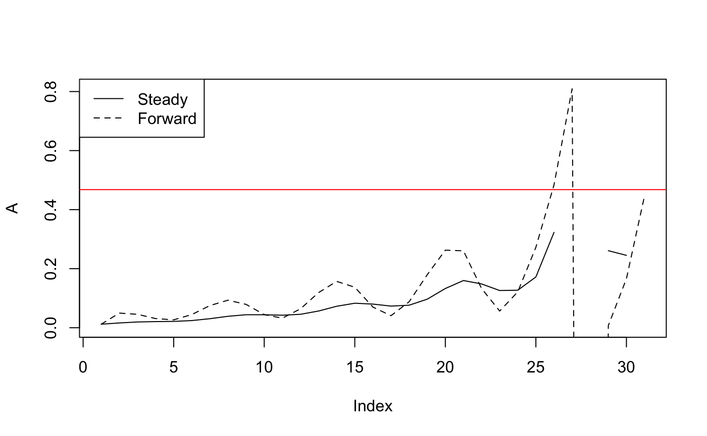
Having worked through all that, we jump to a much harder model tracking the age of infection with the possibility of superinfection.
We keep most of the notation from before, but now let \(I_{i,t}\) denote the fraction of the population that has had its most recent infection \(i\) months ago, and \(E_{i,t}\) denote the fraction of the population that was just exposed and whose previous infection occurred \(i\) months ago: \[\begin{equation} \begin{array}{rl} S_{t+1} & = (1-A_t) S_t + \sum_i (1-A_t)(1-Q_i) I_{i,t} \\ E_{0, t+1} &= A_t \left[ S_t + \sum_i (1-Q_i)I_{i,t} \right] \\ E_{1,t+1} &= A_t \left[E_{0,t} + \sum_{i=1}^n E_{i,t}) \right] \\ E_{i,t+1} &= A_t Q_{i-1} I_{i-1,t} \\ E_{n,t+1} &= A_t \left( Q_{n-1, t} I_{n-1,t} + Q_{n, t} I_{n,t} \right) \\ I_{1,t+1} &= (1-A_t) \sum_{i=1}^n E_{i,t}\\ I_{i,t+1} &= (1-A_t) Q_{i-1, t} I_{i-1,t} \\ I_{n,t+1} &= (1-A_t) \left( Q_{n-1, t} I_{n-1,t} + Q_{n, t} I_{n,t} \right) \\ \end{array} \end{equation}\] …so we write \[ Y = \left<S, E_0, E_i, \ldots, E_{n-1}, E_n, I_1, I_i, \ldots, I_{n-1}, I_n \right> \] and \[ D = \left<0, 0, 1, \ldots, 1\right> \]
PAR$In <- 5
PAR$Cn <- 0
makeD <- function(PAR) {
In = PAR$In; Cn = PAR$Cn
D = c(0)
if(In > 0) {
D = c(D, 0, rep(1, In*2))
} else {
D = c(D, 1)
}
D = c(D, rep(0, Cn))
return(D)
}
makeD(PAR)
#> [1] 0 0 1 1 1 1 1 1 1 1 1 1
makeBage <- function(PAR) {
A = PAR$A; Q = PAR$Q; In = PAR$In
S = c(S=1-A, E0=A, E=rep(0, In), I = rep(0,In))
E0 = c(0, 0, A, rep(0, In-1), (1-A), rep(0, In-1))
M = cbind(S, E0)
Ei = E0
for(i in 1:In) M = cbind(M, Ei)
for(i in 1:(In-1)){
Ii= c((1-A)*(1-Q), A*(1-Q), rep(0,i), A*Q, rep(0, In-i-1), rep(0,i), (1-A)*Q, rep(0, In-i-1))
M = cbind(M, Ii)
}
Im= c( (1-A)*(1-Q), A*(1-Q), rep(0,In-1), A*Q, rep(0,In-1), (1-A)*Q)
M = cbind(M, Im)
M
}
B = makeBage(PAR)
colSums(B)
#> S E0 Ei Ei Ei Ei Ei Ii Ii Ii Ii Im
#> 1 1 1 1 1 1 1 1 1 1 1 1
makeVage <- function(PAR) {
PAR$A=0
makeBage(PAR)
}
V = makeVage(PAR)
colSums(V)
#> S E0 Ei Ei Ei Ei Ei Ii Ii Ii Ii Im
#> 1 1 1 1 1 1 1 1 1 1 1 1
makeWage <- function(PAR){
(makeBage(PAR)-makeVage(PAR))/PAR$A
}
W = makeWage(PAR)
colSums(W)
#> S E0 Ei Ei Ei
#> 1.110223e-16 1.110223e-16 1.110223e-16 1.110223e-16 1.110223e-16
#> Ei Ei Ii Ii Ii
#> 1.110223e-16 1.110223e-16 6.938894e-18 6.938894e-18 6.938894e-18
#> Ii Im
#> 6.938894e-18 6.938894e-18
# Update AR2PR to accomodate exposure and treatment class
AR2PR <- function(A, PAR, Bfn, eigen = T) {
D = makeD(PAR)
PR = c()
for(Ai in A) {
PAR$A = Ai
if(eigen) {
eq = findYeq(PAR, Bfn)
} else {
eq = algebYeq(PAR)
}
PR = c(PR, D%*%eq)
if(PAR$Cn > 0) {
Ci = sum(eq[(length(eq) - 1:PAR$Cn) + 1])
if(Ai == A[1]) {
C = c(Ci)
} else {
C = c(C, Ci)
}
}
}
if(length(eq) == 3) {
out.list = list(X = PR, C = C)
} else {
out.list = list(X = PR)
}
return(out.list)
}
findAXmax(PAR, makeBage)
#> $A
#> [1] 0.9999323
#>
#> $X
#> [1] 0.9999967
X = seq(0.5, 0.8, 0.01)
X = (1 + 0.1*sin(seq(0, length(X), length.out = length(X))))*X
plot(X, type = "l")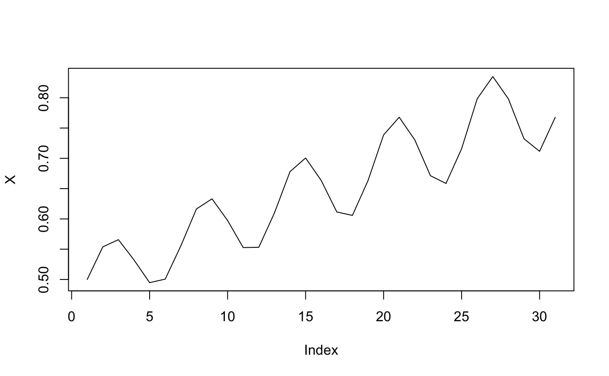
eqAR = PR2AReq(X, PAR, makeBage)
#> [1] "max A: 1; max X: 1"
#> [1] "Monotonic"
plot(eqAR$A, type = "l")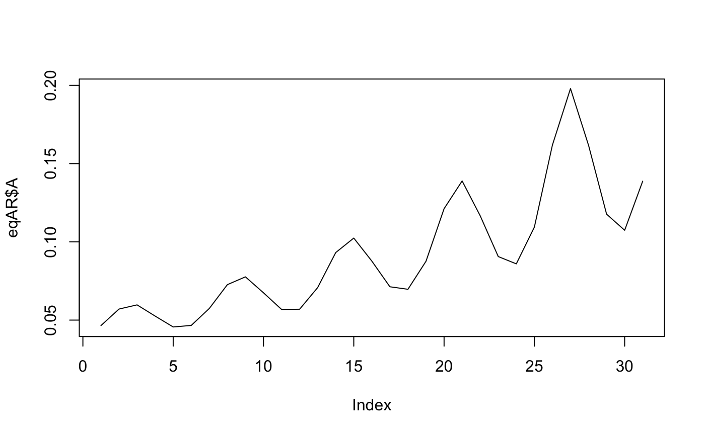
PAR$A =c(eqAR$A[1])
Y = findYeq(PAR, makeBage)
D = makeD(PAR)
as.numeric((X[i] - D%*%V%*%Y) / (D%*%W%*%Y))
#> [1] 5.187568e+16
D%*%W%*%Y
#> [,1]
#> [1,] 5.161384e-18Forward simulation with the initial \(A_t\) formula breaks down because there is a one timestep delay in the impact of \(A\) on \(X\), so that \(D \cdot W \cdot Y_t = 0\). We reformulate \(A_t\) as a function of \(X_{t+2}\);
\[D Y_{t+2} = X_{t+2} = D B_{t+1} B_{t} Y_t = D(A_{t+1}W + V)(A_t W + V) Y_t = D(A_t A_{t+1} W^2 + A_{t+1} W V + A_t V W + V^2) Y_t\]
Because the row sums of \(W\) are zero, the terms \(A_t A_{t+1} W^2\) and \(A_{t+1} W V\) drop out and we get,
\[ A_t = \frac{X_{t+2} - D V^2 Y_t} {D V W Y_t}\]
## Update
fn2 <- function(params, PAR, Bfn, X) {
A1 = params[1]
A2 = params[2]
D = makeD(PAR)
PAR$A = A1
Y0 = findYeq(PAR, Bfn)
PAR$A = A2
B2 = Bfn(PAR)
Y1 = B2%*%Y0
Y2 = B2%*%Y1
return(as.numeric(sum(abs(X[1] - D%*%Y1)) + sum(abs(X[2] - D%*%Y2))))
}
params = optim(fn = fn2, par = c(0, 0.1), PAR = PAR, Bfn = makeBage, X = X)$par
# Set up equilibrium start values
forwardA = PAR$A =c(params[1])
Y0 = findYeq(PAR, makeBage)
forwardA[2] = PAR$A =c(params[2])
B = makeBage(PAR)
Y = B%*%Y0
# Check against input X
D = makeD(PAR)
X[1]
#> [1] 0.5
D%*%Y
#> [,1]
#> [1,] 0.5
forwardX = c(D%*%Y)
# Simulate forward
for(i in 3:length(X)) {
forwardA[i] = PAR$A = as.numeric((X[i] - D%*%V%*%V%*%Y) / (D%*%V%*%W%*%Y))
B = makeBage(PAR)
Y = B%*%Y
forwardX = c(forwardX, D%*%Y)
}
sum(abs(X[1:length(forwardX)] - forwardX))
#> [1] 1.147394e-08
# Plot
plot(eqAR$A, type = "l", ylab = "A",
ylim = c(min(c(eqAR$A, forwardA)), max(c(eqAR$A, forwardA), na.rm = T)))
abline(h = max$X, col = "red")
lines(forwardA, lty = "dashed")
legend("topleft", legend = c("Steady", "Forward"), lty = 1:2)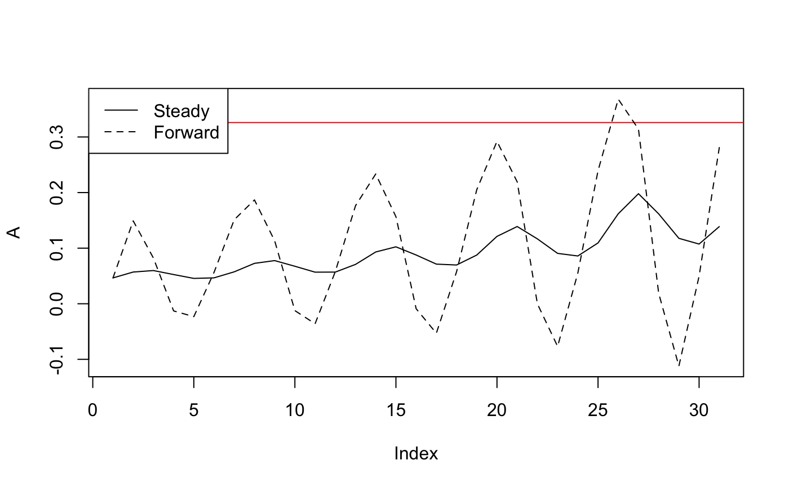
\[\begin{equation} \begin{array}{rl} S_{t+1} & = \left( 1 -\delta \right) \left[ (1-A_t) S_t + \sum_i (1-A_t)(1-P_i) I_{i,t} + C_{2,t}\right] \\ E_{0, t+1} &= \left( 1 -\delta \right) A_t \left[ S_t + \sum_i (1-P_i)(1-\rho_i)I_{i,t} \right] \\ E_{1,t+1} &= \left( 1 -\delta \right) A_t \left[E_{0,t} + \sum_{i=1}^n (1-\rho_i) E_{i,t}) \right] \\ E_{i,t+1} &= \left( 1 -\delta \right) A_t P_{i-1} I_{i-1,t} \\ E_{n,t+1} &= \left( 1 -\delta \right) A_t P_{i-1} (I_{n-1,t} + I_{n,t}) \\ I_{1,t+1} &= \left( 1 -\delta \right) (1-A_t) \sum_{i=1}^n (1-\rho_i) E_{i,t}\\ I_{i,t+1} &= \left( 1 -\delta \right) (1-A_t) P_{i-1, t} I_{i-1,t} \\ I_{n,t+1} &= \left( 1 -\delta \right) (1-A_t) \left( P_{n-1, t} I_{n-1,t} + P_{n, t} I_{n,t} \right) \\ C_{1,t+1} & = (1-\delta) \sum_i \left( \rho_i E_{i, t} + A_t \rho_i I_{i, t}\right) + \delta \\ C_{2,t+1} & = (1-\delta) C_{1,t} \\ \end{array} \end{equation}\] …so we write \[ Y = \left[S, E_0, E_i, \ldots, E_{n-1}, E_n, I_1, I_i, \ldots, I_{n-1}, I_n, C_1, C_2 \right] \] And we can write the previous equations as: \[ Y_{t+1} = (1-\delta) \left[ A_t W Y_t + V Y_t \right]\] where \(W=\) \[(1-\delta) \left[ \begin{array}{c||c|cc|cccc|cc} &S&E_0&E_i&I_1&I_i&I_m&I_n&C1&C2\\ \hline \hline S&-1&0&0&-(1-P_1)&-(1-P_2)&-(1-P_m)&-(1-P_n)&0&0\\ E_0&1&0&0&(1-P_1)(1-\rho_1)&(1-P_i)(1-\rho_i)&(1-P_m)(1-\rho_m)&(1-P_n)(1-\rho_n)&0&0\\ E_1&0&1&(1-\rho_i)&0&0&0&0&0&0\\ E_2&0&0&0&P_1(1-\rho_1)&0&0&0&0&0\\ E_3&0&0&0&0&P_2 (1-\rho_2)&0&0&0&0\\ E_n&0&0&0&0&0&P_m (1-\rho_m)&P_n (1-\rho_n)&0&0\\ I_1&0&-1&-(1-\rho_i)&0&0&0&0&0&0\\ I_2&0&0&0&-P_1&0&0&0&0&0\\ I_3&0&0&0&0&-P_2&0&0&0&0\\ I_n&0&0&0&0&0&-P_m&-P_n&0&0\\ C1&0&0&0&\rho_1&\rho_2&\rho_m&\rho_n&0&0\\ C2&0&0&0&0&0&0&0&0&0\\ \end{array} \right]\]
\(V=\) \[(1-\delta) \left[ \begin{array}{c||c|cccc|cccc|cc} &S&E_0&E_1&E_2&E_n&I_1&I_2&I_m&I_n&C_1&C_2 \\ \hline \hline S&1&0&0&0&0&1-P_1&1-P_2&1-P_m&1-P_n&0&1\\ \hline E_0&0&0&0&0&0&0&0&0&0&0&0 \\ E_1&0&0&0&0&0&0&0&0&0&0&0 \\ E_2&0&0&0&0&0&0&0&0&0&0&0 \\ E_3&0&0&0&0&0&0&0&0&0&0&0 \\ E_n&0&0&0&0&0&0&0&0&0&0&0 \\ \hline I_1&0&1&1-\rho_1&1-\rho_2&1-\rho_n&0&0&0&0&0&0 \\ I_2&0&0&0&0&0&P_1&0&0&0&0&0 \\ I_3&0&0&0&0&0&0&P_2&0&0&0&0 \\ I_n&0&0&0&0&0&0&0&P_m&P_n&0&0 \\ \hline C_1&0&0&\rho_1&\rho_2&\rho_n&0&0&0&0&0&0\ \\ C_2&0&0&0&0&0&0&0&0&0&1&0\\ \end{array} \right] + \left[ \begin{array}{c} 0\\0\\0\\0\\0\\0\\0\\0\\0\\0\\0\\\delta/(1-\delta)\\0 \end{array} \right]\]
makeBdrugs_age = function(PAR){
A = PAR$A; Q = PAR$Q; rho = PAR$rho; In = PAR$In; Cn = PAR$Cn
S = c(S=1-A, E0=A, E=rep(0, In), I = rep(0,In), C=rep(0,Cn))
E0 = c(0, 0, (1-rho)*A, rep(0, In-1), (1-rho)*(1-A), rep(0, In-1), rho, rep(0, Cn-1))
M = cbind(S, E0)
Ei = E0
for(i in 1:In) M = cbind(M, Ei)
for(i in 1:(In-1)){
Ii= c((1-A)*(1-Q), A*(1-Q), rep(0,i), A*Q, rep(0, In-i-1), rep(0,i), (1-A)*Q, rep(0, In-i-1), rep(0, Cn))
M = cbind(M, Ii)
}
Im= c( (1-A)*(1-Q), A*(1-Q), rep(0,In-1), A*Q, rep(0,In-1), (1-A)*Q, rep(0, Cn))
M = cbind(M, Im)
if(Cn==2){
C1 = c(0, rep(0, 2*In+1),0,1)
M = cbind(M, C1)
C2 = c(1, rep(0, 2*In+1),0,0)
M = cbind(M, C2)
}
M
}
makeV = function(PAR, Bfn){
PAR$A=0
Bfn(PAR)
}
makeW = function(PAR, Bfn){
V = makeV(PAR, Bfn)
(Bfn(PAR)-V)/PAR$A
}
PAR$Cn = 2
X = seq(0.05, 0.35, 0.01)
X = (1 + 0.1*sin(seq(0, length(X), length.out = length(X))))*X
ARdrugs_age = PR2AReq(X, PAR, makeBdrugs_age)
#> [1] "max A: 0.185; max X: 0.322"
#> [1] "Non-monotonic"## Generic forward simulation function
simAR <- function(X, PAR, Bfn) {
V = makeV(PAR, Bfn)
W = makeW(PAR, Bfn)
D = makeD(PAR)
outY <- matrix(nrow = length(D), ncol = length(X))
if(PAR$In > 1) {
params = optim(fn = fn2, par = c(0, 0.1), PAR = PAR, Bfn = Bfn, X = X)$par
# Set up equilibrium start values
outA = PAR$A =c(params[1])
Y0 = findYeq(PAR, Bfn)
outA[2] = PAR$A =c(params[2])
B = Bfn(PAR)
Y = B%*%Y0
outY[, 1] = Y
# Simulate forward
for(i in 3:length(X)) {
outA[i] = PAR$A = as.numeric((X[i] - D%*%V%*%V%*%Y) / (D%*%V%*%W%*%Y))
B = Bfn(PAR)
Y = B%*%Y
outY[, i - 1] = Y
}
} else {
# Set up equilibrium start values
forwardA = PAR$A =c(eqAR$A[1])
Y = findYeq(PAR, Bfn)
outY[, 1] = Y
# Simulate forward
for(i in 2:length(X)) {
forwardA[i] = PAR$A = as.numeric((X[i] - D%*%V%*%Y) / (D%*%W%*%Y))
B = Bfn(PAR)
Y = B%*%Y
outY[, i] = Y
}
}
return(list(A = outA, Y = outY))
}
## Set up PR2AR that can take any model and return equilibrium or forward simulation values
PR2AR <- function(X, PAR, eq = F) {
if(PAR$In > 1 & PAR$Cn > 0) {
Bfn = makeBdrugs_age
} else if (PAR$In > 1) {
Bfn = makeBage
} else if (PAR$Cn > 0) {
Bfn = makeBdrugs
} else {
Bfn = makeB
}
if(eq) {
outList <- PR2AReq(X, PAR, Bfn)
} else {
outList <- simAR(X, PAR, Bfn)
}
return(outList)
}
forwardA = PR2AR(X, PAR, eq = F)$A
eqA = PR2AR(X, PAR, eq = T)$A
#> [1] "max A: 0.185; max X: 0.322"
#> [1] "Non-monotonic"
plot(eqA, type = "l", ylab = "A",
ylim = c(min(c(eqA, forwardA), na.rm = T), max(c(eqA, forwardA), na.rm = T)))
abline(h = max$X, col = "red")
lines(forwardA, lty = "dashed")
legend("topleft", legend = c("Steady", "Forward"), lty = 1:2)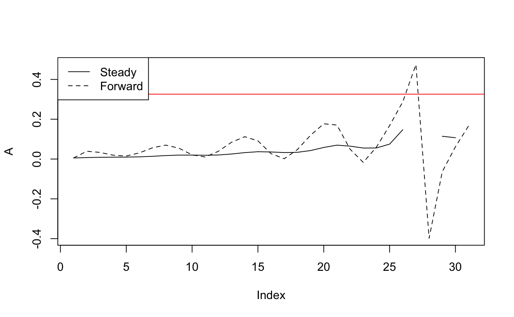